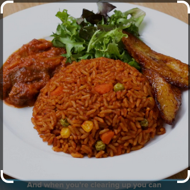

Sobolo

Details
jollof rice, is a rice dish from West Africa.
The dish is typically made with long-grain rice, tomatoes, chilies,
onions, spices, and sometimes other vegetables and/or meat in a single pot,
although its ingredients and preparation methods vary across different regions.
The dish's origins are traced to Senegal.
Ingredients
- 2 large yellow onions, roughly chopped
- 1/3 cup vegetable oil(80ml),plus 2 tablespoons, divided
- 14 oz diced tomatoe (395g), 2cans
- 6 oz tomatoe paste (170g), 1 can
- 1 habanero pepper
- 2 teaspoons curry powder
Steps
- Add onions and 2 tablespoons of oil to a blender and pulse until smooth. Transfer to a medium bowl.
- Add the diced tomatoes, tomato paste, and habanero pepper to the blender, and pulse until smooth. Transfer to a separate medium bowl.
- Heat the remaining ⅓ cup (80 ml) of oil in a large, heavy-bottomed pot over medium heat.
- Once the oil is shimmering, add the onion puree and cook until the water has cooked out and the puree is starting to brown, about 10 minutes.
- Stir in the tomato puree and add the curry powder, garlic powder, ginger, dried herbs, and crushed bouillon cubes. Cook for 20-30 minutes, stirring occasionally, until the stew has reduced by half and is deep red in color.
- Add the rice, mixed vegetables, and water. Bring to a boil, then reduce the heat to low and cover the pot with foil and a lid. Simmer for another 30 minutes, until the rice is cooked through and the liquid is absorbed.